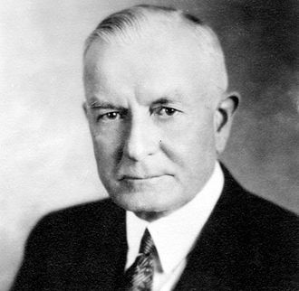

Thomas John Watson Sr. (February 17, 1874 – June 19, 1956) was an American businessman who served as the chairman and CEO of IBM.[1][2] He oversaw the company's growth into an international force from 1914 to 1956.
| Year | Education |
|---|---|
| 2011-2018 | Angel Heart |
| 2017-2019 | Little Angels |
| 2022-present | Herald College Kathmandu |